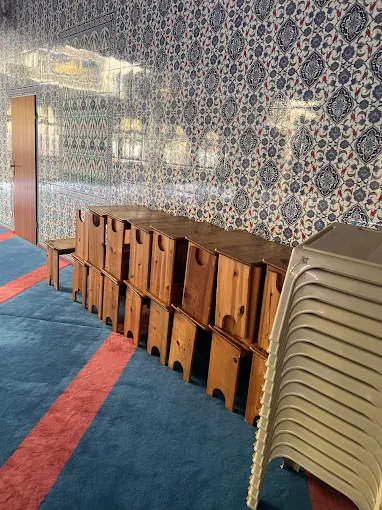

Unsere Projekte
Wir blicken nach vorn und schaffen neue Räume für Bildung, Begegnung und das gemeinschaftliche Miteinander in Wuppertal.
Im Fokus: Das Mädcheninternat
Wir planen die Errichtung eines Wohnheims zur intensiven Betreuung und Weiterbildung von Schülerinnen.
Mädcheninternat für theologischen Unterricht
Mit diesem Projekt gründen wir eine spezialisierte Einrichtung, die jungen Frauen eine qualifizierte theologische Ausbildung und gleichzeitig ein strukturiertes Lernumfeld bietet. Das Wohnheim soll Schülerinnen während ihrer schulischen Laufbahn begleiten und sie in ihrer persönlichen sowie religiösen Entwicklung unterstützen.

Offenheit und Begegnung
Unser Ziel ist es, Menschen zusammenzubringen und die Nachbarschaft aktiv einzubinden.
Gemeinsamkeiten aufbauen
Als Verein möchten wir ein fester Ansprechpartner für alle Bürgerinnen und Bürger in Wuppertal-Elberfeld sein. Wir planen regelmäßige Tage der offenen Tür, Seminare zu gesellschaftlichen Themen und gemeinsame Nachbarschaftsfeste.
Durch diese Aktivitäten schaffen wir Transparenz und ermöglichen es interessierten Personen, sich ein eigenes Bild von unserer gemeinnützigen Arbeit zu machen. Wir wollen Brücken bauen und neue Kontakte für ein gelungenes, solidarisches Zusammenleben knüpfen.
Mitmachen und Gestalten
Jedes neue Projekt lebt vom Engagement unserer ehrenamtlichen Helfer und den Ideen der Gemeindemitglieder. Wenn Sie sich einbringen möchten, sei es bei der Hausaufgabenhilfe, der Organisation von Veranstaltungen oder im Rahmen der Öffentlichkeitsarbeit, freuen wir uns über Ihre Kontaktaufnahme.